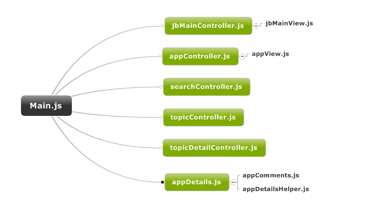

根据之前模块化分享，尝试将"越狱应用"及PP正版按模块划分
本文档描述该项目模块化形式
首页模块，应用页模块，搜索模块，应用详情，主题，主题详情通用模块, DeviceInfo.js, AppInfo.js, UserInfo.js, iosHelper.js, dataService.js, appCommon.js等main.js -> *Controller.js -> *View.js流程main.js 处理hash变化，调用相应Controller的loadData方法，Controller调用view生成界面html**Controller.js，负责加载数据，处理业务逻辑**View.js, 负责渲染模板，处理界面样式
目前PP正版与越狱应用，由于重复代码较多，因此两个页面整合在一起iosV2，通过resType做差异化判断
Controller.js 控制器
Controller其实与MVC的Controller完全没有关系，只是命名如此，相关的Controller文件其实只是作一些数据加载工作
然后调用对于的View渲染页面
View.js 视图文件
View.js相关文件，通过Controller传递过来的实体类，根据模板生成html，渲染到页面上
公用模板有： DeviceInfo.js, AppInfo.js, UserInfo.js, iosHelper.js, dataService.js, appCommon.js, pwi.jsListener.js
DeviceInfo.js 类，提供静态方法(getDeviceList)，统一获取设备接口，提供两个实例接口(hasUpdate, hasInstallApp)获取是否安装某个应用
var devices = DeviceInfo.getDeviceList();
devices[0].hasUpdate(buid, version);
devices[0].hasInstallApp(buid);
alert(devices[0].uuid);
alert(devices[0].name);
alert(devices[0].apps.length);
AppInfo.js 类，用于应用管理，提供统一的接口，方便其它模块调用，使用方法如下:
var apps = AppInfo.getAppList(rawData, function(){
this.appid = this.id;
this.resUrl = this.downurl;
this.name = this.title;
this.appType = this.resType;//软件类型，标示软件/游戏等
this.resType = restype.jbApp;//越狱应用
});
var app = new AppInfo(rawData, function(){
this.appid = this.id;
this.resUrl = this.downurl;
this.name = this.title;
this.appType = this.resType;//软件类型，标示软件/游戏等
this.resType = restype.jbApp;//越狱应用
});
app.donwload();
app.cancel();
app.pause();
UserInfo.js类，处理用户相关逻辑，比如：收藏应用，获取收藏列表，获取下载列表等
dataService.js模块，此模块为正版应用，越狱应用提供调用ppAjax.run的统一接口，每个接口都有对于的单元测试dataService.test.html
该模块使用jquery Promise功能，所有接口均返回promise对象，支持链式调用
调用方法如下：
dataService.loadAppAmount(3)
.done(render)
.fail(failed);
dataService.loadApps(opts);
iosHelper.js模块，相当于一个工具箱，提供页面调用的通用接口，比如: fBuildPageBar， timestampToDate，showLoading类
appCommon.js 模块，此模块主要是业务相关的一些通用函数，以及通用数据，将会保存到这个类，它提供一些通用事件绑定等。
pwi.jsListener.js通用模块，此文件主要暴露全局函数，将c++程序段回调的函数，转换为js事件，具体使用方法：
var jqExt = $(jsListener);
jqExt.on("DeviceChanged", function(){
// do something
});
// 下载通知事件，回调第一个参数为Event对象，后续的参数才是c++返回值
jqExt.on("DownloadStateChanged", function(){
// 更新界面按钮样式等...
});
经过上一次会议讨论，模板使用了arttemplate的simple template语法，详细语法请参考arttemplate github页面
使用tmod grunt插件对模板进行预编译处理
所有template至于common/tpl目录中，根据模块建立相应的子目录
由于模板大同小异，很多模板越狱和正版都是同用的，因此，模板都编译一起，成为一个template.js文件
此次重构所做的优化包括
构建流程，发布正式环境需要对源代码进行构建，具体参考另外一篇文章《grunt实现项目构建》